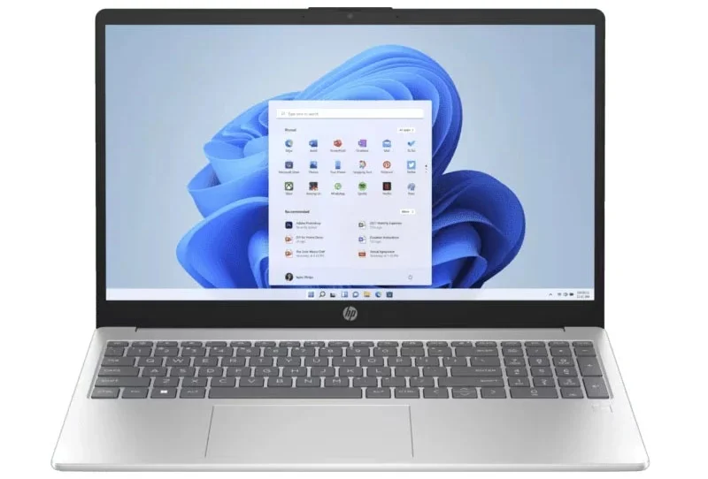
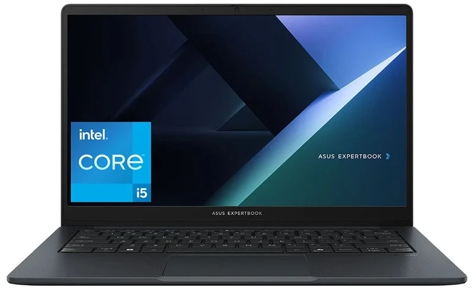
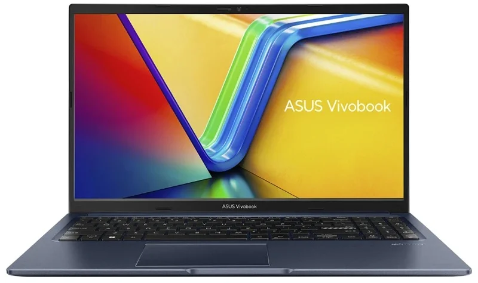
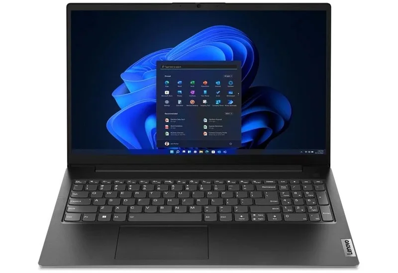
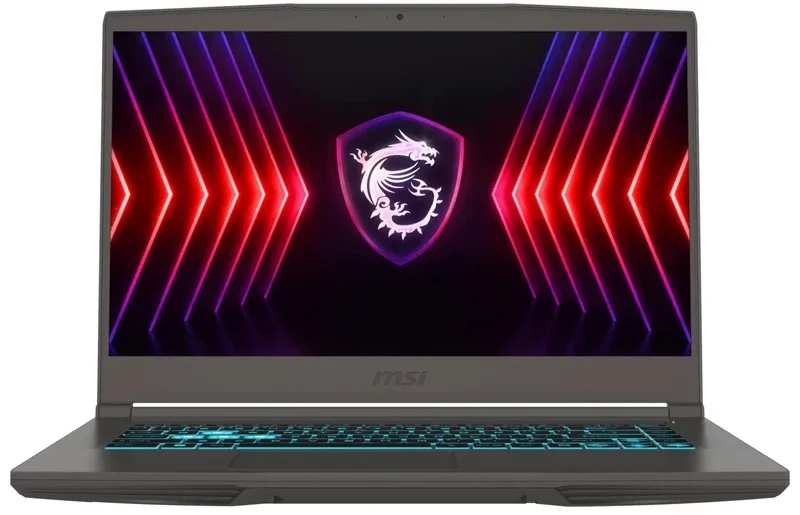

10 สินค้าขายดีที่สุด
-
1. MSI MSI Modern 15 B12MO (11,490 บาท)

ถ้าใครเป็นนักเรียนนักศึกษากำลังหาโน๊ตบุ๊คราคาถูก 2025 เอาไว้ทำรายงานหรือพรีเซนต์งานกับอาจารย์อยู่ MSI Modern 15 B12MO จัดเป็นตัวเลือกที่ไม่เลว ทั้งได้ USB-C Power Delivery ไว้ต่อชาร์จไฟด้วยอะแดปเตอร์ PD 65W ได้ ติดตั้งซีพียู Intel 12th generation มาให้ จะใช้หาข้อมูลทำรายงานแล้วเตรียมพรีเซนต์ด้วย Microsoft Office Home & Student 2021 ก็ได้ทันที เวลาแชร์ไอเดียหรือประชุมกับเพื่อนอยู่ก็กดหน้าจอให้แบนราบไปกับพื้นโต๊ะแล้วกดคีย์ลัดพลิกหน้าจอกลับได้ แม้บางคนจะติดใจว่า RAM ติดมาแบบออนบอร์ดเพียง 8GB ก็จริง แต่ก็มากพอใช้งานทั่วไปอย่างเปิดเว็บ, ดูหนังฟังเพลงและทำรายงานได้แน่นอน อาจต้องหมั่นปิดโปรแกรมที่ไม่ใช้งานเป็นระยะๆ จะช่วยได้มาก
-
2. Acer Aspire Lite 16 AL16 (16,490 บาท)

เพิ่มเงินอีกเล็กน้อยจะมีโน๊ตบุ๊คราคาถูก 2025 จาก Acer รุ่น Acer Aspire Lite 16 AL16 ให้เลือก สเปคจัดว่าลงตัวทั้งได้ Intel 13th generation กับ RAM 16GB ติดมาให้ใช้และอัปเกรดเพิ่มได้มากสุด 32GB ติดตั้ง Microsoft Office Home & Student 2024 มาให้ แถมคีย์บอร์ดมี Numpad ด้วย ถ้าต้องทำงานกับไฟล์ Excel และบัญชีเป็นประจำยิ่งทำงานสะดวกขึ้นมาก ด้านจุดสังเกตมีเพียงพอร์ต USB-C เป็นแบบต่อโอนไฟล์อย่างเดียว ถ้าต่อชาร์จไฟแบบ Power Delivery หรือต่อหน้าจอแยกแบบ DisplayPort ได้จะสมบูรณ์แบบมาก
-
3. HP 15-fd1107TU (17,290 บาท)
เพิ่มเงินอีกเล็กน้อยจะมีโน๊ตบุ๊คราคาถูก 2025 จาก Acer รุ่น Acer Aspire Lite 16 AL16 ให้เลือก สเปคจัดว่าลงตัวทั้งได้ Intel 13th generation กับ RAM 16GB ติดมาให้ใช้และอัปเกรดเพิ่มได้มากสุด 32GB ติดตั้ง Microsoft Office Home & Student 2024 มาให้ แถมคีย์บอร์ดมี Numpad ด้วย ถ้าต้องทำงานกับไฟล์ Excel และบัญชีเป็นประจำยิ่งทำงานสะดวกขึ้นมาก ด้านจุดสังเกตมีเพียงพอร์ต USB-C เป็นแบบต่อโอนไฟล์อย่างเดียว ถ้าต่อชาร์จไฟแบบ Power Delivery หรือต่อหน้าจอแยกแบบ DisplayPort ได้จะสมบูรณ์แบบมาก
-
4. ASUS ExpertBook B1 B1403CVA (17,990 บาท)
ถึงจะขึ้นชื่อว่าเป็นโน๊ตบุ๊คราคาถูก 2025 แต่ก็หาซีรีส์คุณภาพอย่าง ASUS ExpertBook B1 B1403CVA รุ่นใหม่ซีพียู Intel 13th generation มาใช้แล้วอัปเกรดเพิ่มได้อีกพอควร ทั้งเพิ่ม RAM 16GB DDR5 ไปเป็น 64GB ก็ได้ ส่วน SSD ได้อินเทอร์เฟส PCIe 4.0 จึงเอา M.2 NVMe รุ่นใหม่ความเร็วสูงมาเปลี่ยนได้ ในแง่การใช้งานก็มีคีย์ลัดให้ตั้งค่าร่วมกับปุ่ม F1~F4 ได้ มี NumberPad ติดมากับแป้นทัชแพด รวมถึงเซนเซอร์สแกนลายนิ้วมือติดมาแถมได้พอร์ต USB-C 3.2 Full Function อีกคู่เอาไว้ต่อหน้าจอแยกและชาร์จไฟได้ เวลาจะพกไปใช้งานนอกสถานที่ก็ชาร์จไฟสะดวก ต่อหน้าจอ USB-C ก็ง่าย แต่มีจุดสังเกตว่าทาง ASUS ไม่ได้ติดตั้ง Windows 11 มาให้ ผู้ใช้ต้องซื้อเพิ่มเองหรือติดตั้งระบบปฏิบัติการ Linux เข้ามาใช้แทน
-
5. ASUS Vivobook 15 X1502VA (18,490 บาท)
โน๊ตบุ๊คราคาถูก 2025 รุ่นเริ่มต้นโปรแกรมครบอย่าง ASUS Vivobook 15 X1502VA นับเป็นตัวเลือกที่ดีสำหรับคนอยากซื้อโน๊ตบุ๊คมาแล้วเปิดใช้งานได้เลย ไม่ต้องซื้อซอฟท์แวร์เพิ่มแบบ ASUS Expertbook ซีรีส์ Vivobook จะน่าสนใจมากและยังได้ฟีเจอร์ใช้งานติดมาให้ค่อนข้างครบเครื่อง ไม่ว่าจะเซนเซอร์สแกนลายนิ้วมือ, พอร์ต USB-C Power Delivery, บานหน้าจอกางได้แบนราบ 180 องศาก็ได้ ซึ่งเพียงพอกับการใช้ทำงานเอกสารทุกแบบอย่างแน่นอน แต่ถ้าเป็นไปได้อยากให้ทาง ASUS อัปเกรดพอร์ต USB-C เป็น Full Function ให้ต่อหน้าจอแยกได้ด้วย จะได้ใช้ Multiport adapter มาต่อแยกเป็นพอร์ตต่างๆ ใช้งานได้ง่ายขึ้น
-
6. Lenovo V15 G4 IRU (18,490 บาท)
Lenovo V15 G4 IRU เป็นโน๊ตบุ๊คราคาถูก 2025 อีกซีรีส์ซึ่งมีรุ่นย่อยหลากหลายสเปก ตั้งแต่รุ่นไม่มีระบบปฏิบัติการติดตั้งมาให้หรือจะเป็นรุ่นแนะนำพร้อม Windows 11 และ Microsoft Office Home & Student 2021 ให้ใช้ไม่พอ ยังติดตั้งพอร์ตใช้งานมาครบเครื่องไม่ว่าจะ USB-C Full Function, LAN, USB-A จึงต่ออุปกรณ์ต่างๆ ทำงานได้สะดวกและยังอัปเกรดเพิ่ม 2.5″ SATA III SSD และ RAM ได้อย่างละ 1 ช่องด้วย แต่ข้อสังเกตของ Lenovo V15 G4 ตัวนี้คือหน้าจอเป็นพาเนล TN จึงแสดงขอบเขตสีและมีมุมมองภาพไม่กว้างเท่า IPS และแบตเตอรี่ก็มีความจุเพียง 38Whr ดังนั้นเจ้าของเครื่องควรพกพาวเวอร์แบงค์หรืออะแดปเตอร์ติดกระเป๋าเอาไว้เสมอ จะได้ใช้ทำงานได้โดยไม่ต้องกังวลว่าเครื่องจะดับ
-
7. MSI Thin A15 B7UC (20,990 บาท)
MSI Thin A15 B7UC เป็นเกมมิ่งโน๊ตบุ๊ค 2025 ที่ราคา, สเปกและฟีเจอร์จัดว่าน่าใช้ทีเดียว แต่แนะนำว่าถ้าซื้อมาแล้วควรเพิ่ม RAM เป็น 16GB ขึ้นไปจะช่วยให้เล่นเกมและทำงานได้ดียิ่งขึ้น ว่าด้วยจุดน่าใช้ของ MSI Thin ต้องยกให้ฟีเจอร์ Matrix Display ซึ่งต่อหน้าจอแยกผ่านพอร์ต HDMI กับ USB-C แสดงผลได้ 2 จอพร้อมกันและยังชาร์จไฟด้วยอะแดปเตอร์ GaN 100W เข้าพอร์ต USB-C ได้ ไม่ต้องพกอะแดปเตอร์ประจำเครื่องติดตัวเสมอ เหมาะกับผู้ใช้หลากหลายกลุ่มตั้งแต่นักเรียนนักศึกษาหาโน๊ตบุ๊คไว้ตัดต่อคลิปและเล่นเกมฆ่าเวลาได้ระดับหนึ่งหรือแม้แต่พนักงานออฟฟิศอยากหาโน๊ตบุ๊คไว้ทำงานก็น่าสนใจเช่นกัน